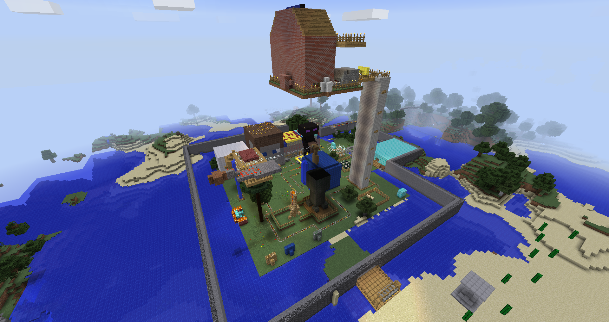
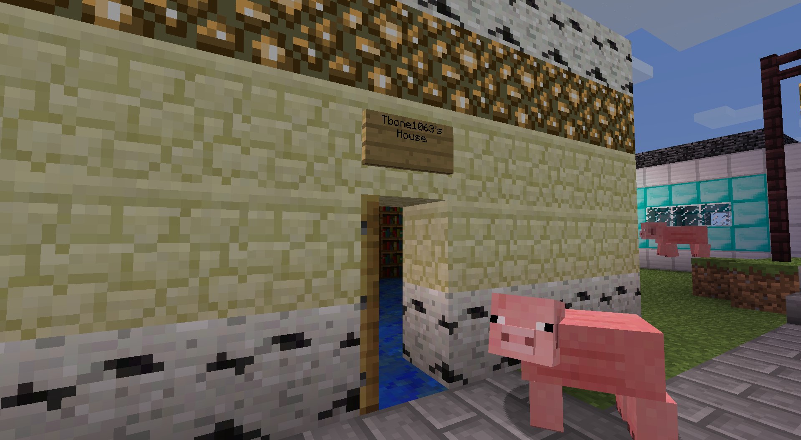

This page is currently incomplete and is subject to change without notice.
A History
2010: The beginning
The Realmic Network began with an unnamed minecraft server, running version 1.5_01 beta. It started out with me and nick, Nick was technically the first to ever set foot on one of my servers as I had issues and told him I'll get on after him. We built for like a week or so before other friends joined in on the fun. The next was Matthew by the name of Canadaguy then Carlos in the following days. I remember some good builds, no creative mode. On top of that we didn't know about commands until about 3 weeks in. So most things were gathered by hand, smelted by hand, then put into each build. My most fond memory of those builds was a huge cathedral that nick build then moved into. We then discovered public servers, and all they had to offer in quality of builds. So we gave the server a name, TheRealm, and went forth with a goal in our hearts to one day go public. But sadly, that server seized to exist as I messed up the properties file, causing the world to delete. Looking back it was still there, but I wasn't old enough to tell. So from there we moved onto what we would call the first age of TheRealm servers.
2011: The Beta Age
We enter this world in tears from our shattered previous one, but now with an urge to rebuild a more organized server. Keep in mind we were all like 12. We as a group quickly decided we were going to have multiple countries, with each having a capital city. The first city we built was Matthews city. These cities more consisted of a huge house than an actual multiple house district. His was built entirely out of iron blocks, back when iron blocks texture was closer to diamond than its new industrial look.The Capital of Norssia: Temporary Capital of TheRealm.net
Mid-way through building Norssia, Beta version 1.7(1.7.3 once patched) was released introducing a less ugly cobblestone and pistons. So we decided we needed irrigation for the capital and build this monstrosity of a dam.
The build looking back was pretty pointless, but back then it was amazing. From here the chronological order gets skewed as I don't remember if Alantis or Skylands came first. For the sake of this telling, I believe Skylands came next as it didn't have any voxel elements to it, unlike Alantis. This is important as you'll learn later. Alright, so Skylands.
Skylands
Skylands was the city-state owned by Carlos. He owned none of the land below the region, that was owned by Rambo. Building this in version 1.7.3 was the greatest achievement of this Realm Age. With no capability of flying, the platforms were constructed by pillaring and careful placing. The product was amazing, a multi-island city where members could rent out islands and build houses on them.
Alantis
Alantis was Nick's domain. Completely submerged in water, each house was separate dome. Alantis construction was stunted until the introduction of voxel sniper, which allowed for the dome construction.
Punybob's Realm
I honestly don't remember much of his realm. He built multiple houses around the mountains, thats about it.
The HQ
Over time we noticed we needed a separate capital to control the entire server, so the idea of the HQ was born. Each admin owned realm had an embassy surrounding a large head, which acted as a meeting room for the leaders of the server. During the construction of the HQ, 1.8 Beta the "Adventure Update" was released. This opposed the servers largest griefing threat, Endermen. Only hearing about them and seeing very little screenshots, we feared the worst. Thus, a large obsidian and bedrock wall was commissioned to be built around the capital. This was the first time we used bedrock on the server, so we voted on the two most careful builders to create the wall. The chosen ones were me and Matthew. The wall can be seen in the single screenshot I could find from the
old servers website.
- 


One big joke of the server was the appearance and incidents of Herobrine. Someone, who still hasn't spoken up, rapidly pranked the server posing as Herobrine. Lighting stuff on fire, placing signs, the likes to spook us. More fun happened for weeks to come on the server. Then, Minecraft pushed out of beta, it was finally released. As a group we decided we needed to ride this new version wave and refocus on the original goal, to go public. So a plan was put into place to experiment with "public server features", thus a new age began. The age of the PSE.
The Public Server Experiment (PSE)
The PSE was a testing server updated to Minecraft 1.0 upon release. Equipped with more standard plugins for servers at that time, we wanted to get familiar with them for when it was time to construct an official public server. After some digging for the old server files, I found a list of all the plugins we used:
- ChatManager
- Essentials
- EssentialsChat
- EssentialsProtect
- EssentialsSpawn
- Home
- iConomy
- MobArena
- Modifyworld
- PermissionsEx
- Register
- Towny
- VoxelGadget
- VoxelPort
- VoxelVoyage
- WorldEdit
So via the plugins you can see their is some overlapping, such as Home and Essentials for the /home commands, but that's how it was. The "structure" on the server took advantage of Towny instead of our "invisible" realm boundaries of the prior server. My memory of these are iffy, but luckily Towny stores all their data in readable text files.
Towns
Bree
- Mayor: christopher7332
- Residents: christopher7332,dominickv3,dlny1,TonyC26,mikeymac41
- Assistants: dominickv3
- Slogan: Think High!
Starting with the towns is my town: Bree. I think Bree originally was either a reference to a book or something, but upon more research it's a village in Middle Earth. I'm fine with that coincidence. The town was built on a cliff side, with the houses hanging off the side over water. To get into the houses, crude pathways were built to connect them all to a single entrance. The mayor had both a floating house apart from the cliff network as well as a cliff house. If I remember correctly the floating house was a popular hangout spot.
District 5
- Mayor: Trex1023
- Residents: Trex1023,Tbone1063,KasimFatmi
- Assistants: Tbone1063
- Slogan: THE BEST TOWN EVER!!!
I don't have much memory of this place, will fill in when I interview Trex over it and as well go in for pictures.

- 

Bloodred
- Mayor: Rambo908
- Residents: Rambo908,stickwar101
- Assistants: stickwar101
- Slogan: N/a
[TODO] The funny part about this town is that it's two people are the same person.
CliffHanger
- Mayor: nickyb27
- Residents: nickyb27
- Assistants: N/a
- Slogan: N/a
[TODO]
minetown
- Mayor: punybob323
- Residents: punybob323,sidvshus,CaloWhipband3
- Assistants: N/a
- Slogan: mine till you die
[TODO]
Deleted Towns
Along with the above towns are various towns started but than abolished for reasons lost to time. I felt they should be included for history sake.
Wolfgon
- Mayor: punybob323
- Residents: punybob323
- Assistants: N/a
- Slogan: N/a
No land was claimed under this town name, most likely an original name to minetown.
Redstains
- Mayor: Rambo908
- Residents: Rambo908
- Assistants: N/a
- Slogan: The nether is not evil
No land was claimed under this town name, most likely a joke town.
New Brunswick
- Mayor: Canadaguy1234
- Residents: Canadaguy1234
- Assistants: N/a
- Slogan: N/a
New Brunswick is a Canadian province, fitting but no town blocks on record.
Travel Mentions
While traveling around I found various non town structures as well. One thing became apparent quickly looking around for the first time in 5 years, the PSE was huge. It spanned so much ground it got difficult traveling around without coordinate based teleporting (Minecraft Version 1.2.3).
Airports
There was for some reason a ton of airports built. Mostly housing portal rings inside, I guess it was a theme of travel.
MobArenas
Since this was one of our first more organized servers, plugins such as MobArena were added. This one I found while searching around with MCEdit was mainly empty but still showed the scale we built the arenas in.
Really Big Space
Inside this really big ship next to spawn was simply more portals. I actually remember this build, it took only a couple hours but we were happy with the results.
VoxelVoyage Remains
I found this Ender Dragon in the middle of nowhere, probably someone was on a VoxelVoyage path (Which used modified Ender Dragons for traveling) last time it was used. When I attacked it it crashed the server, spitting out errors on the server not knowing how to process damage for it.
Christmas on the Server
I remember we built this tree for Christmas and actually all got on early to put "presents" under it for each other. What an innocent time.
Permissions
At the end of each server period, I am going to post the permission files to see it over time improve as we actually begin to understand how the logistics of the server and it's plugins work.
groups:
Member:
default: true
info:
prefix: ''
suffix: ''
build: false
inheritance:
permissions:
Admins:
info:
prefix:
- Admin
suffix: ''
build: true
permissions:
- '*'
inheritance:
default: false
Users:
default: false
info:
prefix: ''
suffix: ''
build: true
inheritance:
permissions:
- 'towny.town.new'
- 'towny.town.claim'
- 'towny.town.resident'
- 'towny.town.toggle.pvp'
- 'towny.wild.*'
- 'towny.town.spawn.*'
- 'iConomy.access'
- 'iConomy.payment'
- 'foo.bar'
- 'mobarena.arenas.default'
- 'mobarena.arenas.pirate_ship'
- 'mobarena.use.join'
- 'mobarena.use.leave'
- 'mobarena.classes.Knight'
- 'mobarena.classes.Archer'
- 'mobarena.classes.Tank'
- 'mobarena.classes.Chef'
- 'mobarena.classes.Oddjob'
- 'mobarena.classes.Smuggler'
- 'mobarena.classes.Ninja'
- 'essentials.tpa'
- 'essentials.tpaccept'
- 'essentials.afk'
users:
Tbone1063:
permissions:
groups:
- Admins
Trex1023:
permissions:
groups:
- Admins
christopher7332:
permissions:
groups:
- Admins
dominickv3:
permissions:
groups:
- Admins
punybob323:
permissions:
groups:
- Admins
Rambo908:
permissions:
groups:
- Admins
coldbboy123:
permissions:
groups:
- Admins
Canadaguy1234:
permissions:
groups:
- Admins
KasimFatmi:
permissions:
groups:
- Admins
nickyb27:
permissions:
groups:
- Admins
stickwar101:
permissions:
groups:
- Users
dlny1:
permissions:
groups:
- Admins
sidvshus:
permissions:
groups:
- Admins
CaloWhipband3:
permissions:
groups:
- Admin
GRANTSWIM4:
permissions:
groups:
- Users
We_Are_Legion115:
permissions:
groups:
- Member
mikeymac41:
permissions:
groups:
- Admins
TonyC26:
permissions:
groups:
- Admins
minininjas2000:
permissions:
groups:
- Users